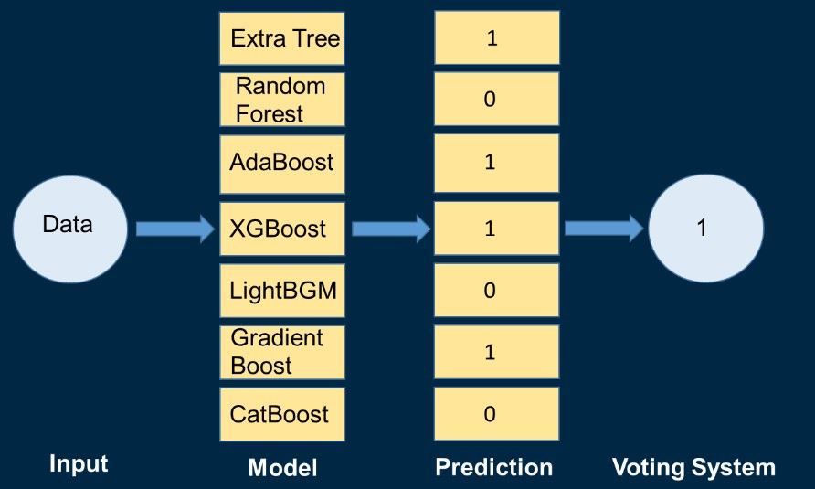
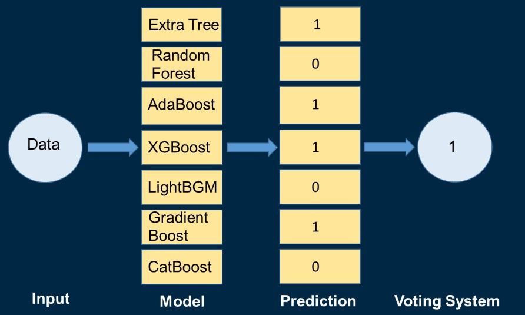

電子遊戲用戶評價之智慧評估系統
Step3 機器學習
Step3-1 機器學習(Machine Learning,ML)是什麼?
簡單來說，就是讓計算機用資料來學習。
機器不像人類，只要重複學習數次，就可以明確辨識出各種顏色及形狀的物體，大多數的機器仍需要上千筆甚至數百萬筆的樣本才能正確運作。
Step3-2 預測目標
本次專案是以遊戲評價作為預測目標，因此利用Steam資料集中的正、負面評價套用Rating公式
，將數值 >= 0.7的定義為1(壓倒性好評、極度好評、大多好評、好評)，數值 < 0.7的數值定義為0(褒貶不一以下)，
最終新增欄位Rating Scale，成為此專案的目標欄位。
Step3-3 數值型資料直接訓練
我們推斷是太多不相關欄位影響模型準確率，因此欲運用特徵選擇法，針對目標欄位與其變數，將相關係數過低的移除，也同步觀察相關係數過高的欄位，
排除Data Leakage，避免上線出現預測不準確的問題。
模型
參數
訓練(Y=0)
訓練(Y=1)
Accuracy
測試(Y=0)
測試(Y=1)
Accuracy
CART
criterion="gini",
max_depth=50,
min_samples_leaf=600
83%
44%
68%
82%
44%
67%
C45
criterion="entropy",
max_depth=50,
min_samples_leaf=600
87%
35%
67%
86%
36%
66%
Extra Tree
criterion="gini",
max_depth=20,
n_estimatore=1500
94%
23%
67%
94%
23%
67%
Random Forest
criterion="entropy",
min_samples_leaf=50,
n_estimatore=1000
90%
33%
69%
89%
33%
68%
AdaBoost
random_state=0,
learning_rate=1,
n_estimatore=500
87%
38%
68%
85%
39%
68%
XGBoost
max_depth=6,
learning_rate=0.3,
n_estimatore=100
95%
58%
81%
81%
42%
66%
LightGBM
defult
89%
44%
72%
85%
44%
68%
Gradient Boosting
default
94%
60%
82%
80%
41%
65%
CatBoost
iterations=20,
learning_rate=1,
depth=10,
loss_funtion="MultiClass"
88%
43%
71%
84%
40%
67%
Step3-4 特徵工程
總欄位為117欄，將目標欄位與變數欄位進行相關性係數分析，篩選過低及過高的欄位釐清資料定義，以避免造成DataLeakage問題，導致模型上線出現預測不準確的問題。
設定Drop corr < 0.02欄位，並觀察corr > 0.5是否與Y有共線性問題，結果欄位數從117欄剩餘67欄。
Step3-5 資料清洗+特徵工程後的訓練
經過以上調整後，表現最好的是XG Boost、LightGBM可以看出好評及壞評遊戲預測，且整體準確度都提高了!
但仔細觀察好壞評遊戲預測的準度仍有40%差距。
Step3-6 利用Kmean分群+Elbow Method後的訓練
而我們也嘗試利用K-means + Elbow Method將相關欄位(包含時間、遊戲類型、價格訊息...等)進行cluster分群，
並新加入至欄位中進行預測，最好的模型為XG Boost、Light GBM，但也發現準確率幾乎沒有變化。
Step3-7 如何提高好評資料準確度?
經實驗結果分析，原資料集中有資料不平衡現象，導致目前Y = 0的準確度極高，但Y = 1 準確度偏低。
因此於參考模型手冊後，想了以下方案:
- 模型中的參數調整:Class_wieght = 'balanced'
- 因部分模型(XG Boost、Gradient Boosting)沒有調整權重的參數，因此利用Oversampling在訓練集增加Y = 1 的筆數。
Step3-8 Class_weight = 'balanced'後的訓練
將模型的參數調整後，整體準確率最好的是Random Forset及Light GBM，準確率沒有太大變化的前提下，
好評遊戲及壞評遊戲的預測準確率差距縮減至5%左右，可避免一面倒的情形。
模型
參數
訓練(Y=0)
訓練(Y=1)
Accuracy
測試(Y=0)
測試(Y=1)
Accuracy
CART
criterion="gini",
max_depth=50,
class_weight="balanced"
73%
73%
73%
73%
72%
73%
C45
criterion="entropy",
max_depth=5,
class_weight="balanced"
73%
73%
73%
72%
73%
73%
Extra Tree
criterion="gini",max_depth=5,
n_estimatore=100,
class_weight="balanced"
73%
73%
73%
72%
72%
72%
Extra Tree
criterion="gini",max_depth=5,
n_estimatore=100,
class_weight="balanced_subsample"
73%
72%
73%
73%
71%
72%
Random Forest
criterion="gini",
min_samples_split=2,
class_weight="balanced_subsample"
75%
82%
72%
74%
78%
75%
AdaBoost
n_estimatore=500,
learning_rate=0.5,
algorithm="SAMME.R"
96%
29%
81%
96%
29%
81%
LightGBM
n_estimatore=100,learning_rate=0.3,
max_depth=6,seed=1000,
class_weight="balanced"
75%
83%
76%
74%
80%
75%
CatBoost
iterations=20,learning_rate=1,
depth=2,loss_function="MultiClass",
auto_class_weights="Balanced"
71%
78%
72%
71%
77%
72%
Step3-9 Oversampling
接著利用Boostrapping方式將好評遊戲重複抽後放回，直到與壞評遊戲資料數量達成一致，經過XGBOOST及Gradient boosting模型訓練下，發現預測準確率沒有太大改變。
Step3-10 Voting System
在多個模型預測準確率很高的情況下，利用投票的概念設計投票系統，將前面預測結果不錯的模型全部進行投票，輸入為資料，經過多個模型進行預測輸出0或1，最終以多數取勝。
可以發現整體準確度來到了77%，好評遊戲和壞評遊戲準確率差距也降至0%，證明了此投票系統的實用性。
模型
測試(Y=0)
測試(Y=1)
Accuracy
備註(示意圖)
Voting
System
77%
77%
77%

※模型準確率比較

遊戲屬性關聯分析
針對遊戲類型利用FP TREE建構遊戲類型推薦系統。
選擇遊戲類型
推薦遊戲類型
Action,Single_player
Indie,Adventure
Single_player,Indie
Casual
Single_player,Indie
Adventure
Single_player,Strategy
Indie
Action,Indie
Casual
Single_player,Indie
Simulation
| 模型 | 參數 | 訓練(Y=0) | 訓練(Y=1) | Accuracy | 測試(Y=0) | 測試(Y=1) | Accuracy |
|---|---|---|---|---|---|---|---|
| CART | criterion="gini", max_depth=50, min_samples_leaf=600 |
83% | 44% | 68% | 82% | 44% | 67% |
| C45 | criterion="entropy", max_depth=50, min_samples_leaf=600 |
87% | 35% | 67% | 86% | 36% | 66% |
| Extra Tree | criterion="gini", max_depth=20, n_estimatore=1500 |
94% | 23% | 67% | 94% | 23% | 67% |
| Random Forest | criterion="entropy", min_samples_leaf=50, n_estimatore=1000 |
90% | 33% | 69% | 89% | 33% | 68% |
| AdaBoost | random_state=0, learning_rate=1, n_estimatore=500 |
87% | 38% | 68% | 85% | 39% | 68% |
| XGBoost | max_depth=6, learning_rate=0.3, n_estimatore=100 |
95% | 58% | 81% | 81% | 42% | 66% |
| LightGBM | defult | 89% | 44% | 72% | 85% | 44% | 68% |
| Gradient Boosting | default | 94% | 60% | 82% | 80% | 41% | 65% |
| CatBoost | iterations=20, learning_rate=1, depth=10, loss_funtion="MultiClass" |
88% | 43% | 71% | 84% | 40% | 67% |
設定Drop corr < 0.02欄位，並觀察corr > 0.5是否與Y有共線性問題，結果欄位數從117欄剩餘67欄。
因此於參考模型手冊後，想了以下方案:
- 模型中的參數調整:Class_wieght = 'balanced'
- 因部分模型(XG Boost、Gradient Boosting)沒有調整權重的參數，因此利用Oversampling在訓練集增加Y = 1 的筆數。
| 模型 | 參數 | 訓練(Y=0) | 訓練(Y=1) | Accuracy | 測試(Y=0) | 測試(Y=1) | Accuracy |
|---|---|---|---|---|---|---|---|
| CART | criterion="gini", max_depth=50, class_weight="balanced" |
73% | 73% | 73% | 73% | 72% | 73% |
| C45 | criterion="entropy", max_depth=5, class_weight="balanced" |
73% | 73% | 73% | 72% | 73% | 73% |
| Extra Tree | criterion="gini",max_depth=5, n_estimatore=100, class_weight="balanced" |
73% | 73% | 73% | 72% | 72% | 72% |
| Extra Tree | criterion="gini",max_depth=5, n_estimatore=100, class_weight="balanced_subsample" |
73% | 72% | 73% | 73% | 71% | 72% |
| Random Forest | criterion="gini", min_samples_split=2, class_weight="balanced_subsample" |
75% | 82% | 72% | 74% | 78% | 75% |
| AdaBoost | n_estimatore=500, learning_rate=0.5, algorithm="SAMME.R" |
96% | 29% | 81% | 96% | 29% | 81% |
| LightGBM | n_estimatore=100,learning_rate=0.3, max_depth=6,seed=1000, class_weight="balanced" |
75% | 83% | 76% | 74% | 80% | 75% |
| CatBoost | iterations=20,learning_rate=1, depth=2,loss_function="MultiClass", auto_class_weights="Balanced" |
71% | 78% | 72% | 71% | 77% | 72% |
| 模型 | 測試(Y=0) | 測試(Y=1) | Accuracy | 備註(示意圖) |
|---|---|---|---|---|
| Voting System |
77% | 77% | 77% |  |
| 選擇遊戲類型 | 推薦遊戲類型 |
|---|---|
| Action,Single_player | Indie,Adventure |
| Single_player,Indie | Casual |
| Single_player,Indie | Adventure |
| Single_player,Strategy | Indie |
| Action,Indie | Casual |
| Single_player,Indie | Simulation |